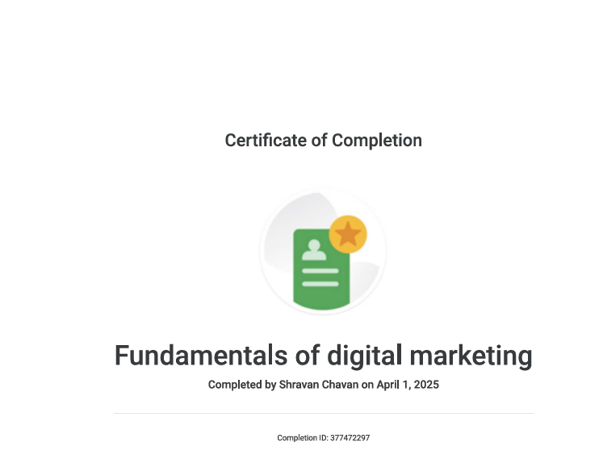

I successfully completed the Artificial Intelligence Fundamentals course from IBM SkillsBuild, where I gained knowledge about the core concepts of AI, including machine learning, neural networks, natural language processing, and real-world applications. This learning experience enhanced my understanding of emerging technologies while strengthening my analytical and problem-solving abilities, preparing me to apply AI concepts in practical scenarios.
I have completed the "Introduction to Cyber Security Certification" by Infosys Springboard, which has provided me with foundational knowledge in the field of cybersecurity. Through this certification, I gained an understanding of key security concepts, threat management, and risk mitigation strategies. This learning experience has enhanced my technical skills and deepened my interest in cybersecurity, equipping me with the knowledge to protect digital assets and contribute to secure online environments.
I was a participant in creating a World Record for the largest attendance in a Virtual Meditation Class organized by HAbuild on World Meditation Day. This unique experience allowed me to be part of a global initiative promoting mindfulness, mental well-being, and collective harmony, while highlighting the significance of meditation in building a healthier and more balanced lifestyle.
I successfully completed the Mastering the Art of Prompting course from IBM SkillsBuild, which enhanced my ability to design effective prompts for AI tools and generative technologies. This certification strengthened my skills in communication, problem-solving, and leveraging AI responsibly and creatively for real-world applications.

I successfully completed the Fundamentals of Digital Marketing course from Google Digital Garage, where I gained knowledge of SEO, SEM, social media marketing, content strategy, analytics, and online advertising. This certification enhanced my understanding of digital tools and strategies, equipping me with practical skills to build an online presence and promote businesses effectively.
I successfully completed the Technology Job Simulation with Deloitte on Forage, which provided hands-on exposure to real-world consulting scenarios. Through this program, I developed problem-solving, analytical, and client-focused skills while working on tasks related to technology transformation, digital solutions, and effective communication. This experience enhanced my professional readiness and gave me practical insights into the consulting and technology industry.